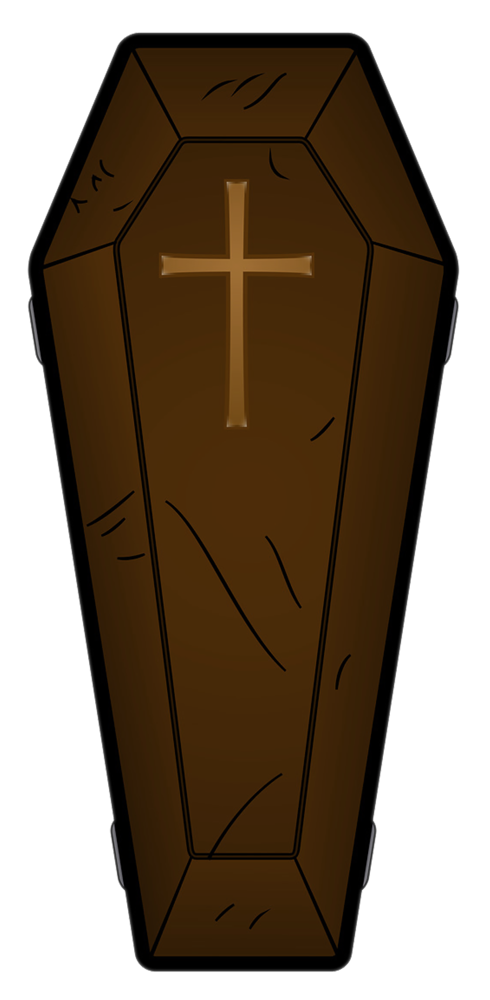
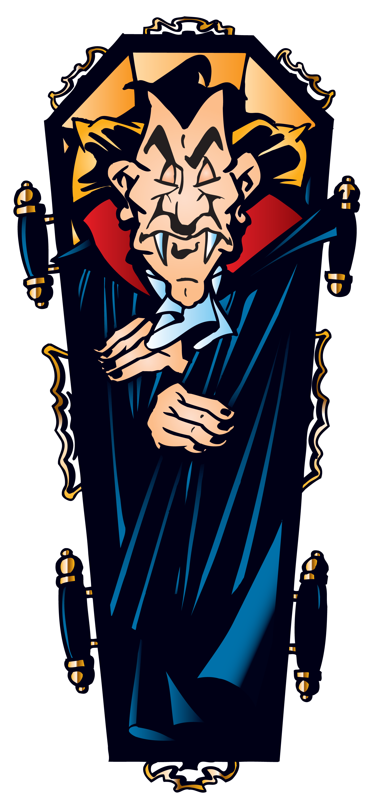
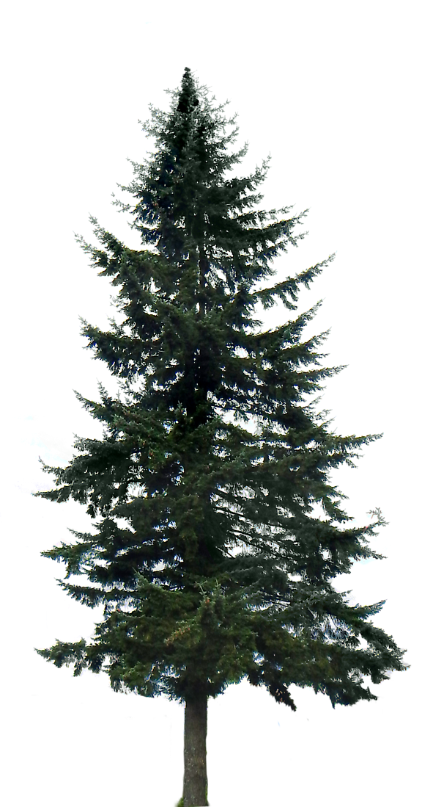
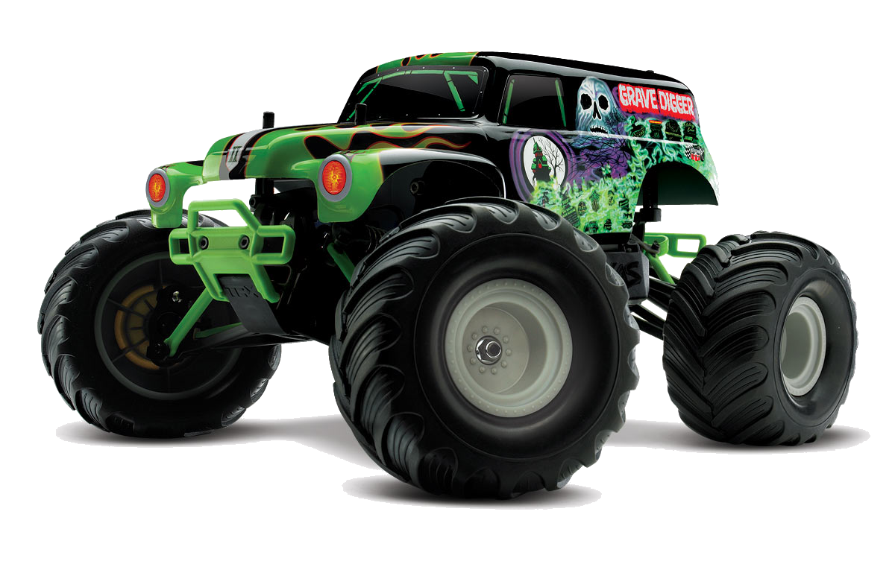
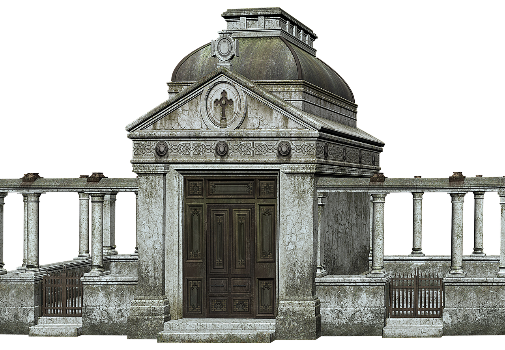

The graveyard trees
The big tree in the center of the plot is where all the ghosts gather every night.
They play here all night with the cats and the ghouls. The tree to the right of the big tree is known as Skeleton Tree. Here all the skeletons meet to play on their bone xylophones and dance around.
The spindley tree on the left is known as the haunted tree. Many years ago this tree was used to hang the evil serial killer of the town and it's said you can still see him there sometimes.